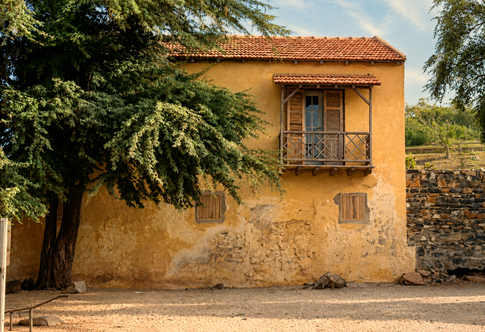
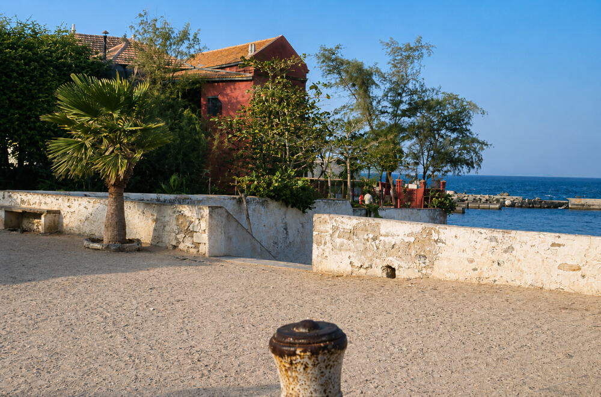
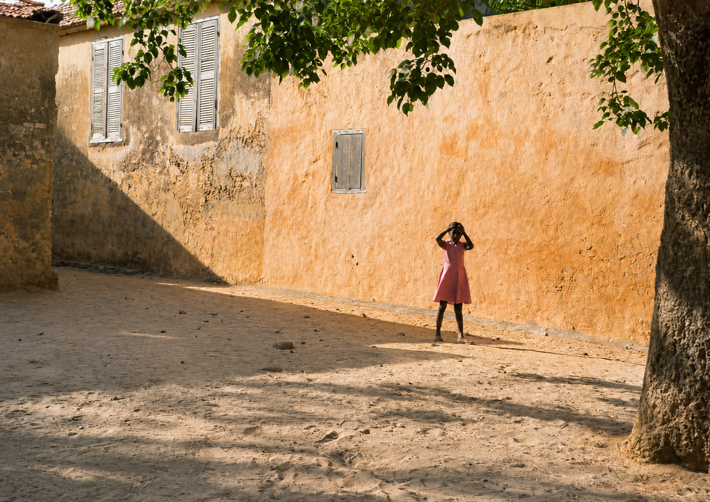
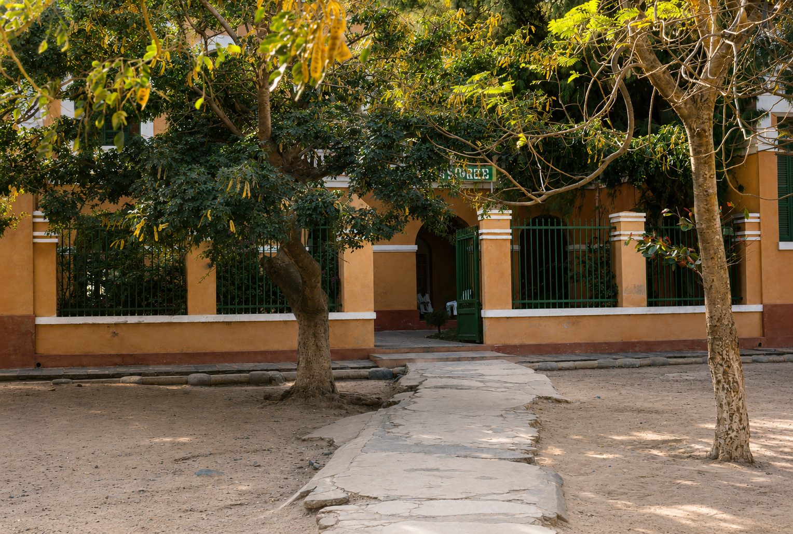
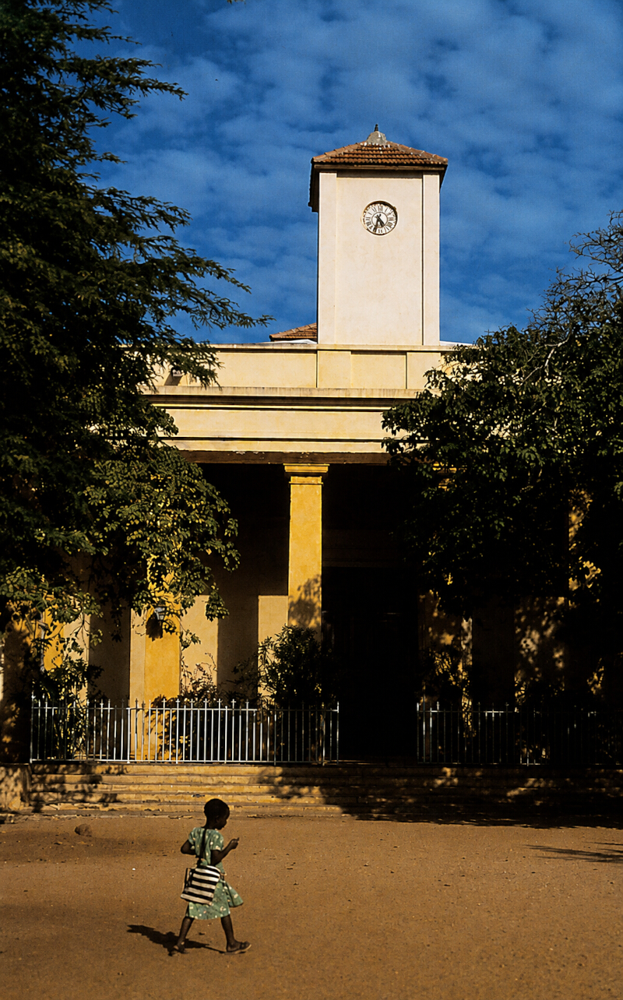
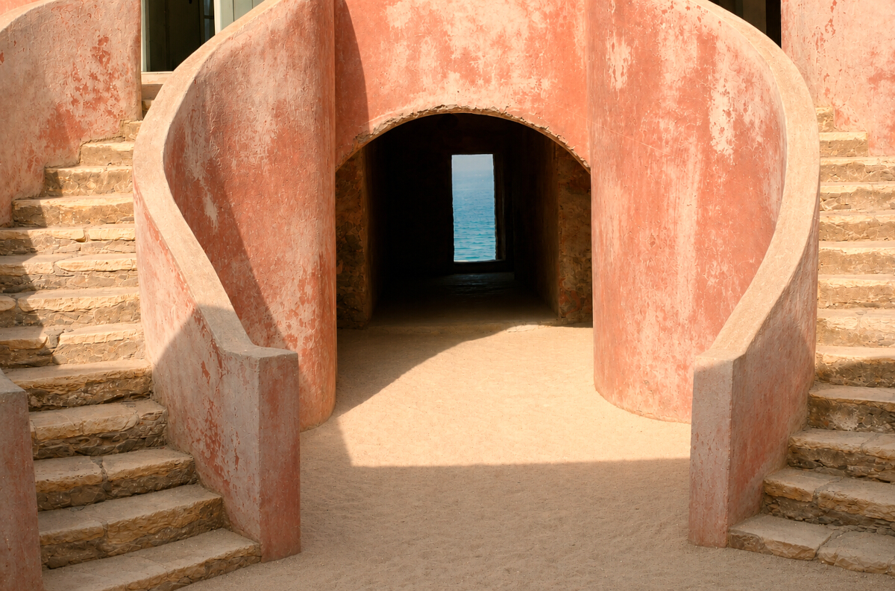
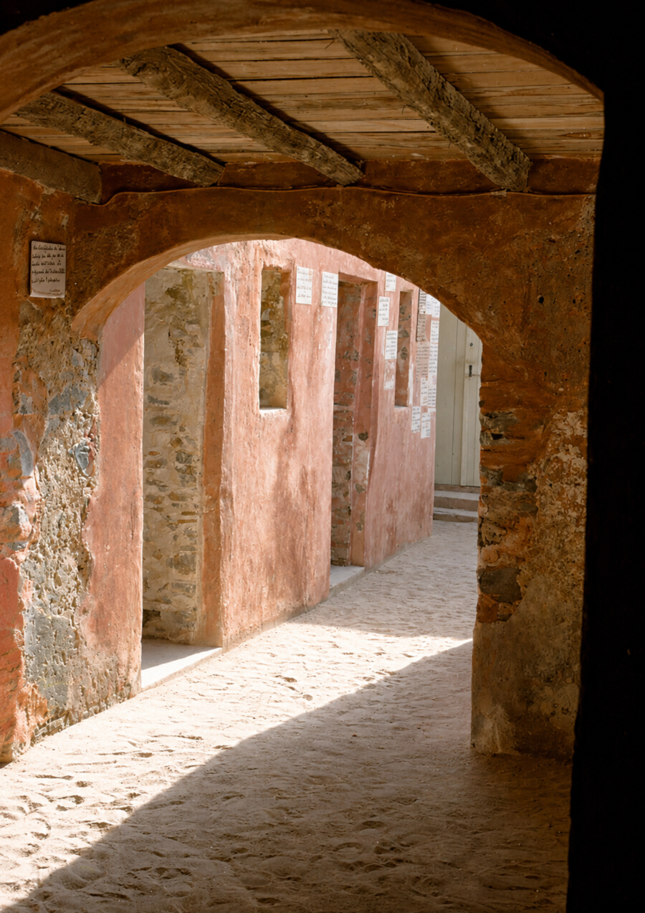
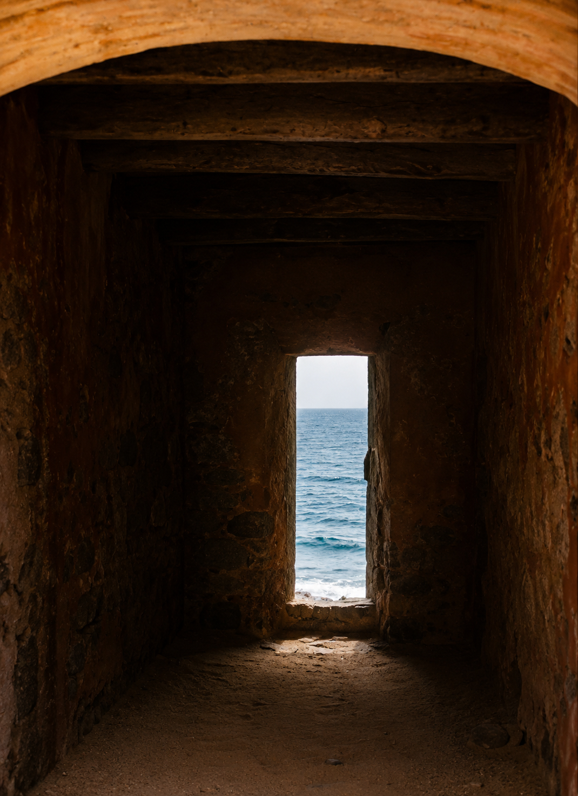
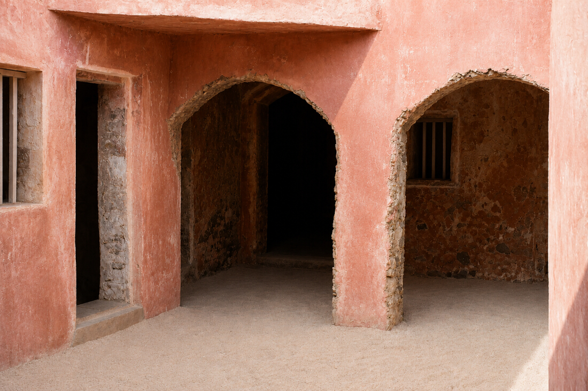
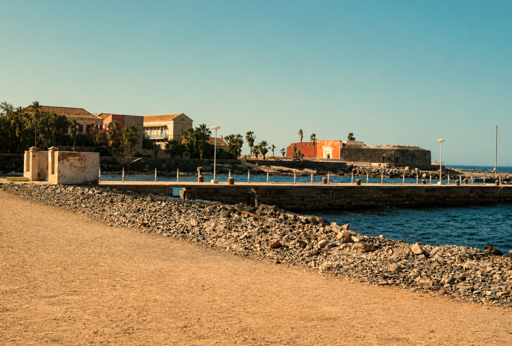

La maison au balcon en bois

L'Hostellerie du Chevalier de Boufflers

Les enfants de Gorée

Le Centre Roume

L'église Saint-Charles-Borromée

La Maison des Esclaves

Intérieur de la Maison des Esclaves/h3>

la porte de l'enfer/h3>

la maison des esclaves/h3>

le fort de Gorée/h3>

la plage de Gorée/h3>

À Gorée, même les barques semblent prendre le temps de respirer avant de reprendre la mer.>
les couleurs de Gorée/h3>

Je n'ai jamais retrouvé ailleurs cette harmonie de couleurs.
Pourtant, j'ai parcouru bien des pays, mais Gorée possède une lumière qui n'appartient qu'à elle.>
le bougainvilliers/h3>

Sous l'immense bougainvillier en fleurs, une petite fille traverse la place.
À Gorée, la beauté des lieux accompagne naturellement les gestes les plus simples de la vie.>
×
❮